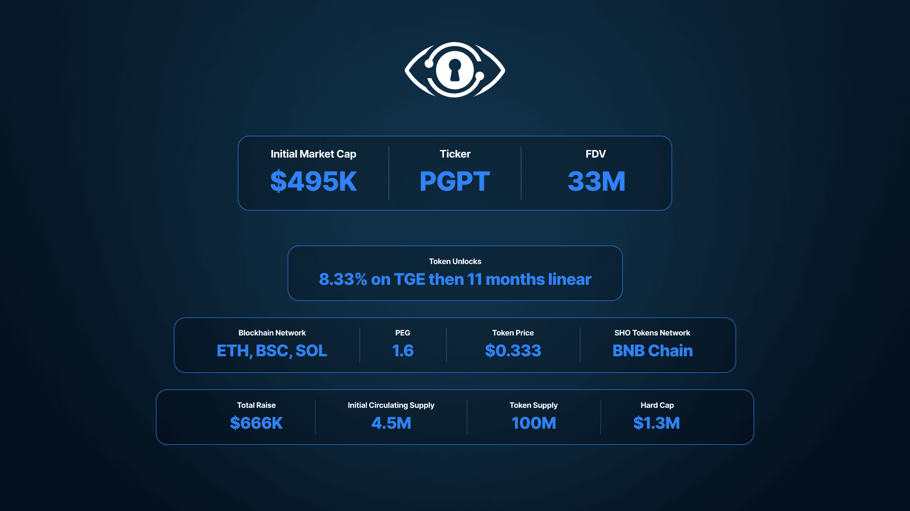
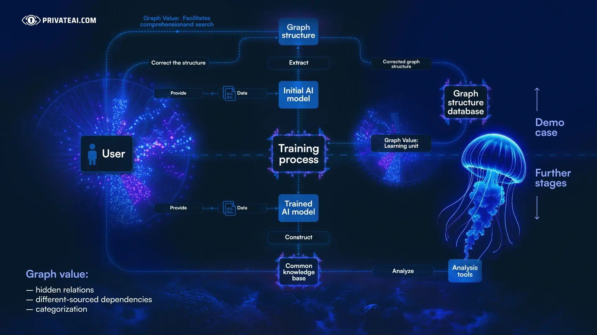
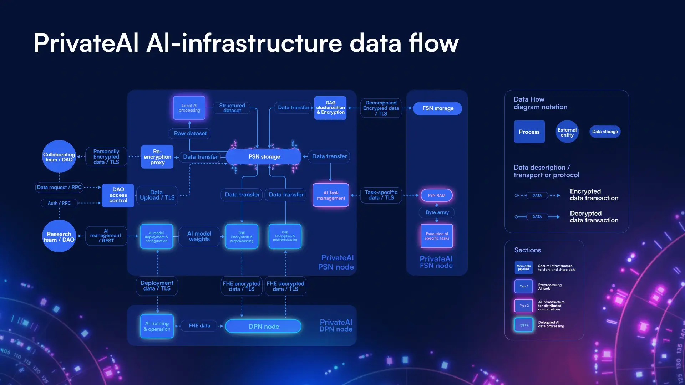
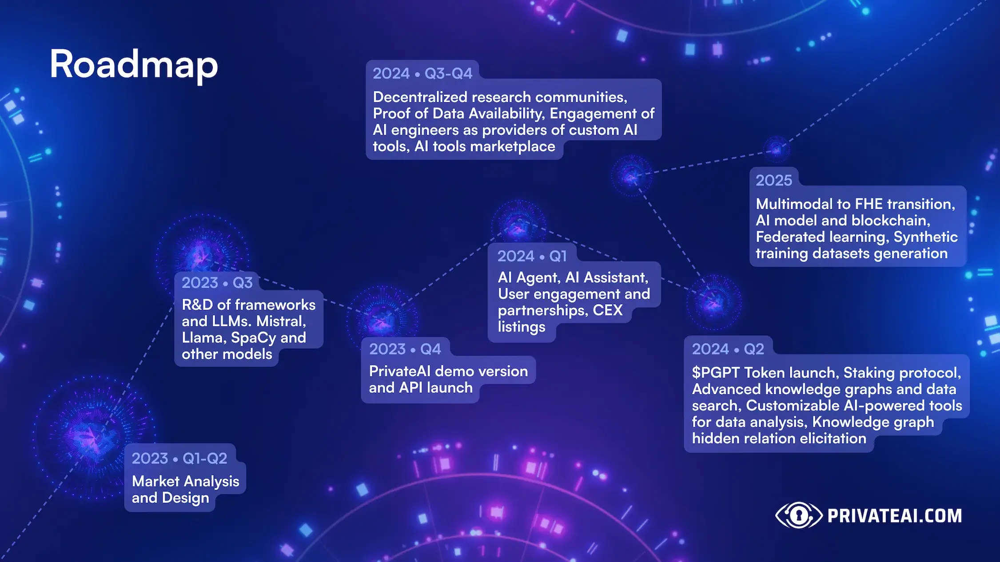
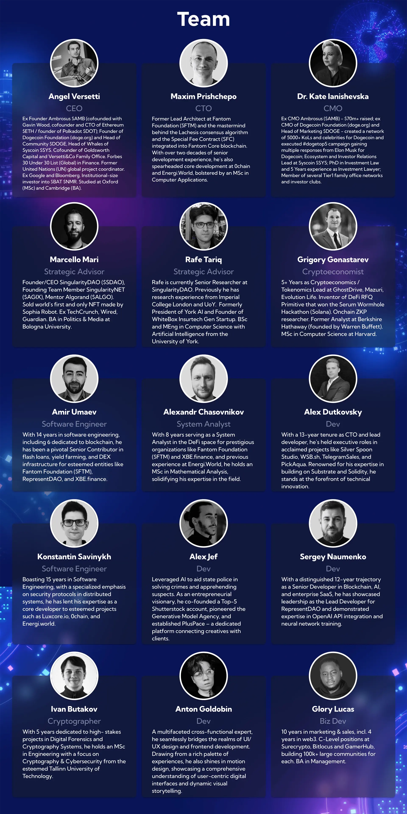
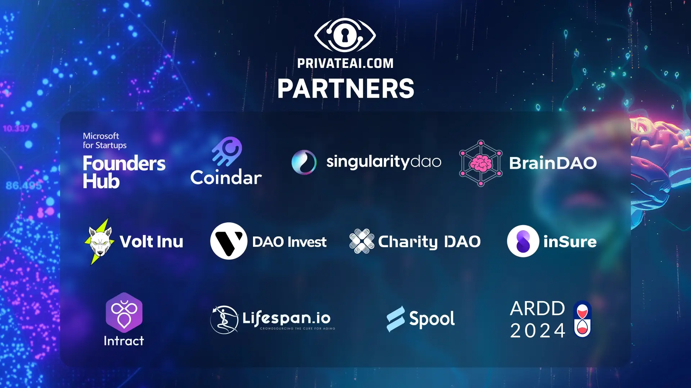

Terms of the PrivateAI (PGPT) sale:
- IDO Type: Refundable (24h refund period)
- Initial Market Cap: $495,000
- Vesting: 8.33% on TGE then 11 months linear
- PEG: $1.6 per DAO
- Public token price: $0.333
- Ticker: PGPT
- Blockhain Network: ETH, BSC, SOLANA
- SHO tokens network: BSC
- Mainnet Token Contract: 0x33a64943a0eaecc2b06b10f89686b797ba75ffad

What is PrivateAI (PGPT)?
PrivateAI is pioneering the intersection of AI and decentralized science (DeSci) by offering a platform where data owners and producers can securely upload, showcase, and monetize their data. Aimed at researchers, AI engineers, and institutions, it transforms the way AI interprets and utilizes research data, unlocking valuable insights, transforming those data into research graphs and fostering innovation across various scientific domains. Through its peer-to-peer Data-as-a-Service model, PrivateAI facilitates a collaborative ecosystem for data analysis, enhancing the discovery process and ensuring fair compensation for contributors, thereby revolutionizing scientific research and data utilization for the greater good.
Our full detailed whitepaper can be found here: privateai.com/whitepaper
See the technical project description here: privateai.com/tech

Uncovering Hidden Relationships
PrivateAI's knowledge graphs are revolutionizing scientific research by uncovering hidden relationships within vast data sets, a feat impossible for the human eye. Our advanced neural networks empower researchers with unprecedented insights, accelerating breakthroughs in disease understanding and longevity. This technology transforms complex information into actionable intelligence, accelerating the path to groundbreaking discoveries. With PrivateAI, the scientific community gains a powerful tool, turning data into a catalyst for innovation and progress in health and science.
What makes PrivateAI (PGPT) unique?
PrivateAI plans to solve the current problems facing in the domain of AI for DeSci:
- The lack of tools for data visualization, which aids in processing and understanding information faster. Scientific research is not being indexed on common search engines like Google.
- The time consumed when analyzing multi-source analysis and interconnecting all facts across multiple sources.
- The need for a common peer-collaboration scientific platform.
- Current platforms are non-rewarding and do not incentivize data owners to share data.
Below, we look at recent projects which are offering a similar solution and what makes the PrivateAI stand out:
Competitor analysis
- Vector Space Biosciences:
- Pros: Builds knowledge graphs using correlations and embeddings, AI model detects hidden relations.
- Cons: Dataset is limited to proteins, publications only from PubMed, community of researchers can upload research on the platform but the graph is built based on the uploaded paper.
- Why PrivateAI is better: there is a community of researchers, user can upload the research on the platform, graph is built based on the uploaded paper, better UX/UI
- Ocean Protocol Foundation Ltd.:
- Pros: Share and monetize data, rich metadata descriptions for data assets.
- Cons: Hard to understand where to start for researchers, targets only data scientists, data quality not monitored, any scientific data available but update frequency is low, promotes compatibility with Semantic Web technologies tied to knowledge graphs but does not directly incorporate knowledge graphs.
- Why PrivateAI is better: any scientific data is available, trusted sources by controlling the content, graph is built based on the uploaded paper, easy to understand the logic of the ecosystem.
- Fetch.ai:
- Pros: Open source framework, AI agents that can be programmed and monetized.
- Cons: Complex for regular scientists to understand, needs technical expertise to run an agent, does not directly incorporate knowledge graphs as a core component.
- Why PrivateAI is better: does directly incorporate knowledge graphs as a core component of its technology stack, no need for additional configuration set up, the discovery of relevant data, and easy to understand the data representation.
- Insilico:
- Pros: Focus on drug discovery, vast biomedical data, clearly extracted knowledge graphs and entities, advanced AI techniques, internal drug development.
- Cons: No focus on data monetization for scientists, no workable version of the product open to scientists, AI implementation and knowledge graph unclear.
- Why PrivateAI is better: clearly extracted knowledge graphs and entities, publicly open to the science community, any domain science is acceptable, targets not only pharma.
- OriginalTrail:
- Pros: Ensures integrity of supply chain data, clear audit trail of data changes and interactions, integration with existing enterprise systems like ERP and IoT devices.
- Cons: Low usability of built graphs, no search capabilities, current focus only on supply chain, concept and graph inconsistency/non-comprehensible.
- Why PrivateAI is better: high usability of built graphs, search capabilities within knowledge base, open to community, knowledge graphs consistency.
Generalizing the the competitive advantages over the main competitors, we can claim that PrivateAI:
- Is a knowledge graph system and underlying knowledge base closing the gaps of privacy by implementing Fully Homomorphic Encryption (FHE) which is our primary advantage
- Provides true data privacy and full ability to manage, export and delete data within their ecosystems, has Privacy-by-design methodology in its core and ensures minimal data retention and strict access controls and an ability to manage and delete data.
- Utilizes federated learning techniques, enabling more secure and efficient AI model training while maintaining user privacy, unlike competitors that rely on centralized data processing.
- Employs secure enclave storage, Confidential Machine Learning (ConfML) and Tendermint-based consensus to achieve a decentralized, privacy-preserving AI platform by ensuring secure data handling and consensus among nodes.
- Focuses on ecosystem development, where data can be securely shared and will cover a much wider scope adapted to research teams collaboration. e.g. relation recognition feature with building a common knowledge model.
Unlike competitors, for preserving data privacy PrivateAI is trying to close two main tasks:
- Incorporate FHE into ML with reasonable speed of work
- Multi user data encryption keys and decryption of results with security of master data.
For FHE purpose PrivateAI intends to use the Concrete ML framework developed by Zama. They have provided tools for converting scikit-learn AI models for inference (such as linear and tree-based ML models, neural networks with simple architecture) into their FHE-supported analogs. Concrete ML implies the so-called TFHE protocol - fast FHE over the Torus. It is the most performative FHE approach nowadays, which allows encrypting information for relatively short timeframes with low resource consumption.
How is PrivateAI unique and better vs the solutions offered currently?
Undeniably, knowledge graphs are essential in streamlining vast sets of data, interlinking information, and using AI to reconstruct visually analyzable and easily readable information for the user. The concept of knowledge graphs extends beyond showing the connections between the data sources as a whole, but more so between the entities within them, which provide much more important information - and this is what we’re building. Data owners will be able to monetize their data and peer-reviews will be incentivized.


At PrivateAI, we understand the core functionality of knowledge graphs and how users engage with large sets of data and will be providing concise information about the platform organization to our community and receiving feedback from them. We have a transparent development approach involving our DeSci community to build a fully functioning graph system together and to create a better experience in scientific research.
The project exploits the NLP AI model to perform Named Entity Recognition (NER) and Relation Extraction (RE). For that purpose a combination of two AI models - SpaCy (NLP library that provides entity recognition for extracting triplets of knowledge graph) and Rebel (identify and extract relationships between entities within text) are implemented. The combination strengthens the representation of comprehensive and accurate representation of knowledge graphs uploaded to the platform scientific papers.
The demand for such a product stems from the increased demand in expanding AI in language learning- which transcends to potentially accelerate the pace of medical discovery, expediting scientific progress and advancements. Of course, the most crucial factor is giving broader access to scientific research data.
What is PrivateAI (PGPT) roadmap?

PrivateAI (PGPT) revenue streams
Blockchain Node Holders:
- Revenue: Derived from DAO operations and staking. As the number of DAO operations increases over time, it suggests a growing or more active decentralized governance model.
PSN Providers:
- Revenue: Primarily driven by AI queries, showing an increasing trend. This suggests that AI services might be gaining traction in the ecosystem.
- Incentives: A consistent incentive structure ensures regular rewards for PSN providers, enhancing their sustained participation.
Storage Providers:
- Revenue: Payouts increase, suggesting growing demands for storage. This might be due to an influx of data or more extensive adoption of the platform.
- Payout Rate: A decreasing rate per gigabyte provided might indicate efficiencies in storage or competitive pricing strategies by providers.
Additional Revenue will be derived from DaaS Subscription model for AI data consumers and users, as well as fees made from Data Marketplace
What is the PrivateAI (PGPT) market strategy?
UVP: Data-as-a-Service for the AGE OF AI
Digital Marketing:
- SEO (Search Engine Optimization): We'll optimize our website and content to rank higher in search engine results, making it easier for potential customers to find us. This includes keyword research, on-page optimization, and building high-quality backlinks.
- Content Marketing: Our strategy involves creating valuable and relevant content to educate, attract and engage our target audience. This could range from blog posts addressing common pain points to informative videos and infographics that explain the benefits of our product and educational topics.
- Social Media Marketing: We plan to use platforms like LinkedIn Community to reach professional audiences with specific interest, Telegram and Facebook for B2C interaction, and X for industry news and company updates. Our aim is to build a community around our brand, educate on broader subjects for our platform, engage in conversations, and drive traffic to our website.
- Media Marketing: We will be reaching out to our list of media, and pitching our story on PrivateAI for coverage on T1 and T2 media outlets.
- Partnerships and Collaborations: We aim to partner with medical universities and alumni with a focus on educating the next generation of role models, the students and encourage them to use the platform for uploading their study research data and collaborating with fellow students.
Corporate partners in the medical field- hospitals, labs, institutions, are our main partnership focus.
Additionally, PrivateAI contributes to addressing the AI industry's challenge of natural data scarcity by aggregating high-quality data from the scientific community. This effort indirectly enhances the pool of natural data available for AI systems, aiding their development and ability to learn from complex datasets.
KPI Metrics:
1. User Engagement Metrics: Track user activity, including frequency and duration of platform usage, number of files uploaded/searched, and engagement with AI features.
2. Data Security Efficacy: Monitor incidents of unauthorized access or data breaches.
3. Data Volume: the volume of data processed and secured, and the growth of the ecosystem in terms of partnerships and collaborative projects.
4. Conversion Rate: Measure the percentage of trial or demo users converting to full users.
5. Customer Satisfaction and Feedback: Conduct regular surveys to assess user satisfaction, focusing on interface usability and AI effectiveness.
6. Search Efficiency: Evaluate the accuracy and relevance of search results and user interaction with the search feature.

Who is the team of PrivateAI (PGPT)?
Team Members previously Co-Founded or led in Executive Role the following crypto projects, many of which became unicorns (ATH Marketcap 1 BIllion dollars +) listed on some or all the biggest exchanges (Coinbase, Binance, Kraken, Gemini, OKX, Huobi, etc):
$FTM, $AMB, $DOGE, $AGIX, $SYS, $DAO.

Who are the partners of PrivateAI (PGPT)?

What are token metrics of PrivateAI (PGPT)?